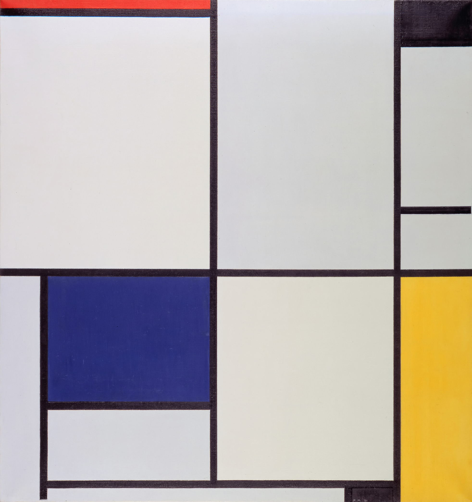
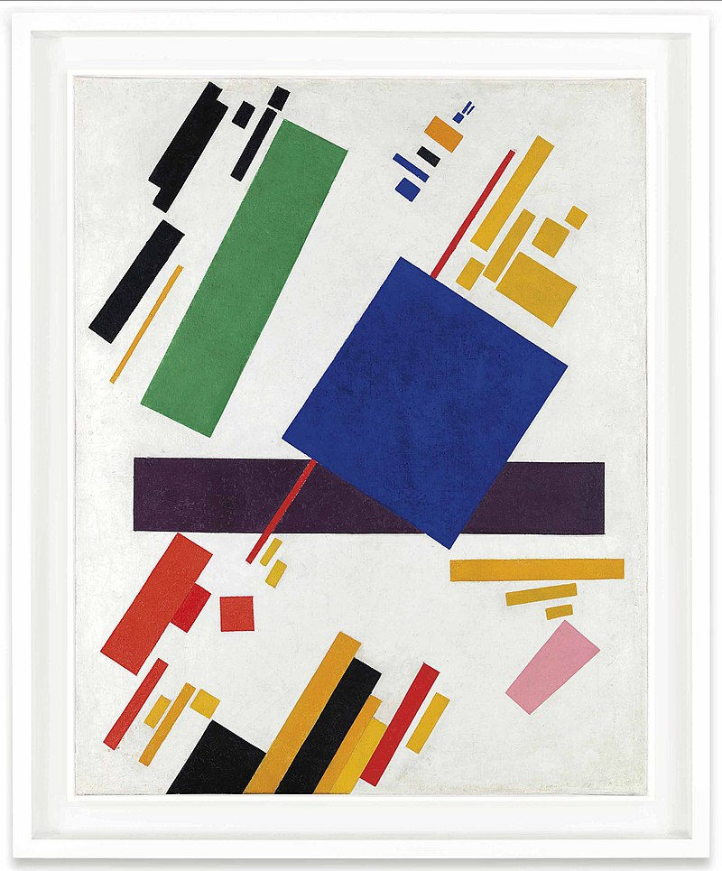
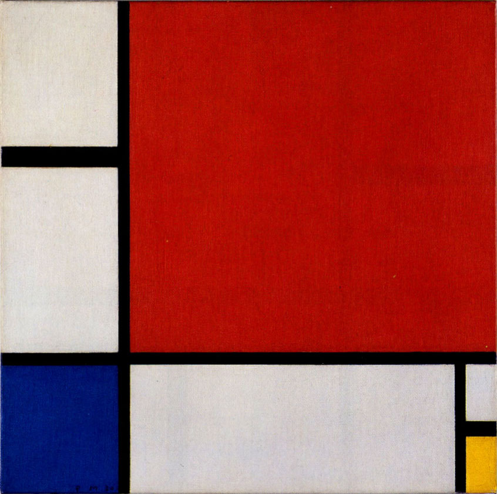

<!DOCTYPE html>
<html xmlns="http://www.w3.org/1999/xhtml" lang="sr-Cyrl"></html>
  <head>
    <meta charset="utf-8" />
    <meta name="viewport" content="width=device-width, initial-scale=1.0" />
<title>Предлог пројекта - Василиј Васиљевич Пајгемски &#8212; Пројектна настава за седми разред - Pygame</title>
    <link rel="stylesheet" href="_static/pygments.css" type="text/css" />
    <link rel="stylesheet" href="_static/basic.css" type="text/css" />
    <link rel="stylesheet" type="text/css" href="_static/activecode.css" />
    <link rel="stylesheet" type="text/css" href="_static/codemirror.css" />
    <link rel="stylesheet" type="text/css" href="_static/clickable.css" />
    <link rel="stylesheet" type="text/css" href="_static/pytutor.css" />
    <link rel="stylesheet" type="text/css" href="_static/modal-basic.css" />
    <link rel="stylesheet" type="text/css" href="_static/datafile.css" />
    <link rel="stylesheet" type="text/css" href="_static/dragndrop.css" />
    <link rel="stylesheet" type="text/css" href="_static/fitb.css" />
    <link rel="stylesheet" type="text/css" href="_static/matrixeq.css" />
    <link rel="stylesheet" type="text/css" href="_static/parsons.css" />
    <link rel="stylesheet" type="text/css" href="_static/lib/prettify.css" />
    <link rel="stylesheet" type="text/css" href="_static/poll.css" />
    <link rel="stylesheet" type="text/css" href="_static/showEval.css" />
    <link rel="stylesheet" type="text/css" href="_static/tabbedstuff.css" />
    <link rel="stylesheet" type="text/css" href="https://stackpath.bootstrapcdn.com/bootstrap/4.2.1/css/bootstrap.min.css" />
    <link rel="stylesheet" type="text/css" href="_static/video.css" />
    <link rel="stylesheet" type="text/css" href="_static/webgldemo.css" />
    <link rel="stylesheet" type="text/css" href="_static/webglinteractive.css" />
    <link rel="stylesheet" type="text/css" href="_static/karel.css" />
    <link rel="stylesheet" type="text/css" href="_static/notes.css" />
    <link rel="stylesheet" type="text/css" href="_static/gallery.css" />
    <link rel="stylesheet" type="text/css" href="_static/associations.css" />
    <link rel="stylesheet" type="text/css" href="_static/editor.css" />
    <link rel="stylesheet" href="_static/user-highlights.css" type="text/css" />
    <link rel="stylesheet" href="https://use.fontawesome.com/releases/v5.1.1/css/all.css" type="text/css" />
    <link rel="stylesheet" href="_static/bootstrap-4.0.0-dist/css/bootstrap.min.css" type="text/css" />
    <link rel="stylesheet" href="_static/flatly.min.css" type="text/css" />
    <link rel="stylesheet" href="_static/petlja-runestone.css" type="text/css" />
    <script id="documentation_options" data-url_root="./" src="_static/documentation_options.js"></script>
    <script type="text/javascript" src="_static/runestonebase.js"></script>
    <script type="text/javascript" src="_static/skulpt.min.js"></script>
    <script type="text/javascript" src="_static/skulpt-stdlib.js"></script>
    <script type="text/javascript" src="_static/jquery.js"></script>
    <script type="text/javascript" src="_static/underscore.js"></script>
    <script type="text/javascript" src="_static/doctools.js"></script>
    <script type="text/javascript" src="_static/language_data.js"></script>
    <script type="text/javascript" src="_static/jquery.highlight.js"></script>
    <script type="text/javascript" src="_static/bookfuncs.js"></script>
    <script type="text/javascript" src="_static/codemirror.js"></script>
    <script type="text/javascript" src="_static/xml.js"></script>
    <script type="text/javascript" src="_static/css.js"></script>
    <script type="text/javascript" src="_static/python.js"></script>
    <script type="text/javascript" src="_static/htmlmixed.js"></script>
    <script type="text/javascript" src="_static/javascript.js"></script>
    <script type="text/javascript" src="_static/jquery_i18n/CLDRPluralRuleParser.js"></script>
    <script type="text/javascript" src="_static/jquery_i18n/jquery.i18n.js"></script>
    <script type="text/javascript" src="_static/jquery_i18n/jquery.i18n.messagestore.js"></script>
    <script type="text/javascript" src="_static/jquery_i18n/jquery.i18n.fallbacks.js"></script>
    <script type="text/javascript" src="_static/jquery_i18n/jquery.i18n.language.js"></script>
    <script type="text/javascript" src="_static/jquery_i18n/jquery.i18n.parser.js"></script>
    <script type="text/javascript" src="_static/jquery_i18n/jquery.i18n.emitter.js"></script>
    <script type="text/javascript" src="_static/jquery_i18n/jquery.i18n.emitter.bidi.js"></script>
    <script type="text/javascript" src="_static/activecode-i18n.en.js"></script>
    <script type="text/javascript" src="_static/activecode-i18n.sr-Cyrl.js"></script>
    <script type="text/javascript" src="_static/activecode.js"></script>
    <script type="text/javascript" src="_static/clike.js"></script>
    <script type="text/javascript" src="_static/timed_activecode.js"></script>
    <script type="text/javascript" src="_static/animationbase.js"></script>
    <script type="text/javascript" src="_static/mchoice.js"></script>
    <script type="text/javascript" src="_static/timedmc.js"></script>
    <script type="text/javascript" src="_static/timed.js"></script>
    <script type="text/javascript" src="_static/mchoice-i18n.en.js"></script>
    <script type="text/javascript" src="_static/mchoice-i18n.sr-Cyrl.js"></script>
    <script type="text/javascript" src="_static/clickable.js"></script>
    <script type="text/javascript" src="_static/timedclickable.js"></script>
    <script type="text/javascript" src="_static/d3.v2.min.js"></script>
    <script type="text/javascript" src="_static/jquery.ba-bbq.min.js"></script>
    <script type="text/javascript" src="_static/jquery.jsPlumb-1.3.10-all-min.js"></script>
    <script type="text/javascript" src="_static/pytutor.js"></script>
    <script type="text/javascript" src="_static/codelens.js"></script>
    <script type="text/javascript" src="_static/skulpt.min.js"></script>
    <script type="text/javascript" src="_static/skulpt-stdlib.js"></script>
    <script type="text/javascript" src="_static/datafile.js"></script>
    <script type="text/javascript" src="_static/dragndrop.js"></script>
    <script type="text/javascript" src="_static/timeddnd.js"></script>
    <script type="text/javascript" src="_static/dragndrop-i18n.en.js"></script>
    <script type="text/javascript" src="_static/dragndrop-i18n.sr-Cyrl.js"></script>
    <script type="text/javascript" src="_static/fitb.js"></script>
    <script type="text/javascript" src="_static/timedfitb.js"></script>
    <script type="text/javascript" src="_static/fitb-i18n.en.js"></script>
    <script type="text/javascript" src="_static/fitb-i18n.sr-Cyrl.js"></script>
    <script type="text/javascript" src="_static/matrixeq.js"></script>
    <script type="text/javascript" src="_static/lib/prettify.js"></script>
    <script type="text/javascript" src="_static/lib/hammer.min.js"></script>
    <script type="text/javascript" src="_static/parsons.js"></script>
    <script type="text/javascript" src="_static/parsons-i18n.en.js"></script>
    <script type="text/javascript" src="_static/parsons-i18n.sr-Cyrl.js"></script>
    <script type="text/javascript" src="_static/timedparsons.js"></script>
    <script type="text/javascript" src="_static/poll.js"></script>
    <script type="text/javascript" src="_static/reveal.js"></script>
    <script type="text/javascript" src="_static/shortanswer.js"></script>
    <script type="text/javascript" src="_static/timed_shortanswer.js"></script>
    <script type="text/javascript" src="_static/showEval.js"></script>
    <script type="text/javascript" src="_static/tabbedstuff.js"></script>
    <script type="text/javascript" src="_static/runestonevideo.js"></script>
    <script type="text/javascript" src="_static/webglinteractive.js"></script>
    <script type="text/javascript" src="_static/FileSaver.min.js"></script>
    <script type="text/javascript" src="_static/Blob.js"></script>
    <script type="text/javascript" src="_static/karelCorner.js"></script>
    <script type="text/javascript" src="_static/karelRobot.js"></script>
    <script type="text/javascript" src="_static/karelWorld.js"></script>
    <script type="text/javascript" src="_static/karelRobotDrawer.js"></script>
    <script type="text/javascript" src="_static/karelUI.js"></script>
    <script type="text/javascript" src="_static/karel.js"></script>
    <script type="text/javascript" src="_static/karel-i18n.en.js"></script>
    <script type="text/javascript" src="_static/karel-i18n.sr-Cyrl.js"></script>
    <script type="text/javascript" src="_static/notes.js"></script>
    <script type="text/javascript" src="_static/pygamelib-init.js"></script>
    <script type="text/javascript" src="_static/gallery.js"></script>
    <script type="text/javascript" src="_static/associations.js"></script>
    <script type="text/javascript" src="_static/associations-i18n.en.js"></script>
    <script type="text/javascript" src="_static/associations-i18n.sr-Cyrl.js"></script>
    <script type="text/javascript" src="_static/editor.js"></script>
    <script type="text/javascript" src="_static/jszip.js"></script>
    <script type="text/javascript" src="_static/editor-i18n.en.js"></script>
    <script type="text/javascript" src="_static/editor-i18n.sr-Cyrl.js"></script>
    <script type="text/javascript" src="_static/translations.js"></script>
    <script async="async" type="text/javascript" src="https://cdnjs.cloudflare.com/ajax/libs/mathjax/2.7.5/latest.js?config=TeX-AMS-MML_HTMLorMML"></script>
    <script type="text/javascript" src="_static/jquery-ui-1.10.3.custom.min.js"></script>
    <script type="text/javascript" src="_static/jquery-fix.js"></script>
    <script type="text/javascript" src="_static/bootstrap-4.0.0-dist/js/bootstrap.min.js"></script>
    <script type="text/javascript" src="_static/bootstrap-4.0.0-dist/js/bootstrap.bundle.min.js"></script>
    <script type="text/javascript" src="_static/bootstrap-sphinx.js"></script>
    <script type="text/javascript" src="_static/waypoints.min.js"></script>
    <script type="text/javascript" src="_static/rangy-core.js"></script>
    <script type="text/javascript" src="_static/rangy-textrange.js"></script>
    <script type="text/javascript" src="_static/rangy-cssclassapplier.js"></script>
    <script type="text/javascript" src="_static/user-highlights.js"></script>
    <script type="text/javascript" src="_static/jquery.idle-timer.js"></script>
    <script type="text/javascript" src="_static/processing-1.4.1.min.js"></script>
    <script type="text/javascript" src="_static/jquery.hotkey.js"></script>
    <script type="text/javascript" src="_static/jquery-migrate-1.2.1.min.js"></script>
    <script type="text/javascript" src="_static/petlja_ruenstone.js"></script>
    <link rel="index" title="Index" href="genindex.html" />
    <link rel="search" title="Search" href="search.html" />
    <link rel="next" title="Предлог пројекта - Smart art" href="geometrija.html" />
    <link rel="prev" title="Предлог пројекта - Планински дрворед" href="suma.html" />
    <meta charset='utf-8'>
    <meta http-equiv='X-UA-Compatible' content='IE=edge,chrome=1'>
    <meta content='width=device-width, initial-scale=1.0, maximum-scale=1.0, user-scalable=0' name='viewport' />
    <script type="text/javascript">
      eBookConfig = {};
      eBookConfig.host = 'http://127.0.0.1:8000' ? 'http://127.0.0.1:8000' : 'http://127.0.0.1:8000';
      eBookConfig.app = eBookConfig.host + '/runestone';
      eBookConfig.ajaxURL = eBookConfig.app + '/ajax/';
      eBookConfig.course = 'Projektni_Pygame';
      eBookConfig.logLevel = '0';
      eBookConfig.loginRequired = 'false';
      eBookConfig.build_info = "";
      eBookConfig.isLoggedIn = false;
      eBookConfig.useRunestoneServices = false;
      eBookConfig.python3 = true;
      eBookConfig.basecourse = 'Projektni_Pygame';
      eBookConfig.runestone_version = '';
      eBookConfig.imagesDir = '_images/';
      eBookConfig.staticDir = '_static/';
      if (typeof (Sk) != "undefined")
        Sk.imgPath = eBookConfig.imagesDir;
    </script>

  </head><body>


<!-- Begin navbar -->

<nav id="navbar" class="navbar navbar-default navbar-fixed-top" role="navigation">

  <div class="container">

    <div class="navbar-header" style="width: 10%;margin-top: 20px;">
      <button type="button" class="navbar-toggle collapsed" data-toggle="collapse" data-target="#bs-example-navbar-collapse-1">
        <span class="sr-only">Toggle navigation</span>
        <span class="icon-bar"></span>
        <span class="icon-bar"></span>
        <span class="icon-bar"></span>
      </button>
      
    </div>

    <div class="collapse navbar-collapse" id="bs-example-navbar-collapse-1" style="margin-top: 10px; margin-left: 25px;">
      <ul class="nav navbar-nav " style="width: 90%;">
        <li class="active"><a style="text-align: center;" href="./">Пројектна настава за седми разред - Pygame</a></li>
      </ul>
    </div>
  </div>
</nav>


<div class="container col-md-12" id="continue-reading"></div>

<div class="container col-md-8 col-md-offset-2" id="main-content" style="margin-top: 100px;">
  
  <div class="section" id="id1">
<h1>Предлог пројекта - Василиј Васиљевич Пајгемски<a class="headerlink" href="#id1" title="Permalink to this headline">¶</a></h1>
<div class="section" id="id2">
<h2>Мајушни искорак у историју уметности<a class="headerlink" href="#id2" title="Permalink to this headline">¶</a></h2>
<p>Током прве половине двадесетог века један од великих авангардних импулса у историји уметности резултирао је тежњом ка одустајању од стандардних образаца, тема и мотива класичне уметности. У том скретању са пута деветнаестовековне уметности, ослоњене на векове уметничког стварања који су јој претходили, уметници су, желећи да направе радикалан рез са дотадашњим стварањем, трагали за новим, аутентичним уметничким изразом.</p>
<p>У сликарству се овај авангардни импулс огледао у све већој апстракцији и све већем удаљавању уметника од фигуралног сликарства. Просто речено, слике су све мање представљале стварност на реалистичан и препознатљив начин, а уметници су почели да истражују нове путеве визуелног изражавања, ослањајући се све више на боју, површину, геометрију и сличне елементе сликарске технике који су доприносили да слике све мање подражавају стварност, а све више изражавају нешто ново и до тада неизречено.</p>
<p>Међу пионирима и шампионима апстрактне уметности овог периода појавила су се имена попут Пита Мондријана (Piet Mondrian), Василија Кандинског (Василий Васильевич Кандинский) и Казимира Маљевича (Казими́р Севери́нович Мале́вич). Оно што је свој тројици било заједничко је да су се, између осталих сличности, у разним фазама свог стваралаштва све више удаљавали од
фигуралног израза и ближили потпуној апстракцији. Међутим, у том одлажењу од реалистичне представе стварности, сва тројица су у своје уметничке речнике уврстили геометрију као један од централних стубова свог уметничког израза.</p>
<p>Ово интересовање за геометрију изродило је слике као што су <strong>Кругови у кругу</strong> (1923) Кандинског</p>
<a class="reference internal image-reference" href="_images/kandinski_krugovi.jpg"></a>
<div class="line-block">
<div class="line"><br /></div>
</div>
<p>Мондријанова <em>Композиција са плавом жутом и црвеном</em></p>
<a class="reference internal image-reference" href="_images/mondrijan_slika_1.jpg"></a>
<div class="line-block">
<div class="line"><br /></div>
</div>
<p>Маљевичева <em>Супрематистичка композиција</em> (1916)</p>
<a class="reference internal image-reference" href="_images/maljevic.jpg"></a>

    <div class="note-wrapper infonote-type">
        <div class="note-icon-holder"> </div>
         
        <div class="course-content">
            <p>
<p>Циљ овог пројекта је да помоћу Пајгејма направиш репродукције значајних уметничких дела двадесетог века и да кроз те репродукције сазнаш нешто више о двадесетовековној уметности.</p>
<p>Мораћеш да употребиш знања која си ове године прикупио/прикупила о писању Пајгејм програма, али надамо се да ће ти овај задатак бити забаван.</p>

    </p></div></div>
</div>
<div class="section" id="id3">
<h2>Анализа и планирање<a class="headerlink" href="#id3" title="Permalink to this headline">¶</a></h2>
<p>Код овог пројекта, велики део посла састоји се у припреми и истраживању. Како је циљ и да се, поред развијања програмерских вештина, упознаш са уметношћу поменутог периода, твој први задатак био би да пронађеш најважније сликаре који су користили геометријски израз у својој уметности као и да пронађеш дело које желиш да репродукујеш. Слободно овде проведи колико год времена ти треба док не нађеш нешто чиме си задовољан/задовољна.</p>
<p>Испод ћемо ти препоручити неколико страница које ти могу дати инспирацију при одабиру слика.</p>
<p>На крају, када одабереш слику која ти одговара и коју желиш да репродукујеш, биће потребно да осмислиш како да је претвориш у Пајгејм код. Слободно се ослони на материјале у нашем курсу за Пајгејм. Пробај да испланираш које ћеш све функције за цртање употребити, којим редоследом, пробај да осмислиш које све координате мораш да пронађеш, пробај да испланираш које ће ти боје бити потребне и како да дођеш до њих. Обрати посебну пажњу на међусобне односе величина и положаја елемената пошто, ако то добро анализираш, само цртање неће бити толико проблематично.</p>
<div class="section" id="id4">
<h3>Ресурси<a class="headerlink" href="#id4" title="Permalink to this headline">¶</a></h3>
<p>Овде ћемо ти препоручити неколико страница на којима ћеш моћи да потражиш одговарајуће слике.</p>
<p><a class="reference external" href="https://www.wassilykandinsky.net/work-50.php">https://www.wassilykandinsky.net/work-50.php</a> - вебсајт посвећен стваралаштву Кандинског
<a class="reference external" href="http://www.artnet.com/">http://www.artnet.com/</a> - страница која ти може помоћи у претраживању стваралаштва различитих сликарства
<a class="reference external" href="http://www.kazimirmalevich.org/four-squares/">http://www.kazimirmalevich.org/four-squares/</a> - вебсајт посвећен стваралаштву Маљевича
<a class="reference external" href="https://www.moma.org/collection/works">https://www.moma.org/collection/works</a> - Museum of Modern Art (New York)
<a class="reference external" href="http://www.pietmondrian.eu/english/individual-works/broadway-boogie-woogie/broadway-boogie-woogie.html">http://www.pietmondrian.eu/english/individual-works/broadway-boogie-woogie/broadway-boogie-woogie.html</a> - сајт посвећен стваралаштву Мондријана
<a class="reference external" href="https://www.wikiart.org/">https://www.wikiart.org/</a> - online енциклопедија посвећена визуелним уметностима
<a class="reference external" href="https://www.artsy.net/">https://www.artsy.net/</a> - сајт посвећен уметности, колекционарству, продаји уметничких дела, истраживању уметности</p>
<p>Поред ових неколико страница које ти препоручујемо, очекујемо и да ћеш сам/сама мало истражити понешто о геометријској уметности. Пробај да откријеш којим су све правцима припадали ови сликари, зашто су уопште сликали на овај начин, који још сликари осим већ поменутих могу да ти послуже као инспирација и сл.</p>
<p>Ако не знаш одакле да кренеш, имена уметника која смо овде навели увек су добро полазиште за гуглање. Такође, можеш питати и наставника/наставницу ликовног да ти помогне, сигурни смо да ће њему/њој бити и више него драго што показујеш интереосвање за ову област.</p>
</div>
<div class="section" id="id5">
<h3>Пример могућег решења<a class="headerlink" href="#id5" title="Permalink to this headline">¶</a></h3>
<p>Овде ћемо ти понудити пример једне урађење репродукције која може да ти послужи као инспирација за тренутак када почнеш да куцаш код.</p>
<p>Мондријанова <em>Композиција II са црвеном, плавом и жутом</em> (1930) је нама послужила као инспирација да се поиграмо и направимо репродукцију ове чувене слике.</p>
<a class="reference internal image-reference" href="_images/mondrijan_kompozicija.jpg"></a>
<p>Покрени сада следећи програм и погледај код који смо ми написали</p>

<div data-childcomponent="mondrijan" class="course-box course-box-problem course-content">

<textarea data-component="activecode" id=mondrijan data-lang="python" 
      data-timelimit=25000    
    data-audio=''   
           data-playtask="true"   data-modaloutput="true" data-hidehistory=true
      data-includexsrc="
# -*- acsection: general-init -*-

#uključujemo biblioteku pygame i pygamebg 
import pygame as pg
import pygamebg

#otvaramo prozor
sirina, visina = 410, 410
prozor = pygamebg.open_window(sirina,visina,&apos;Mondrijan&apos;)

# -*- acsection: main -*-

#bojimo pozadinu
prozor.fill(pg.Color(&apos;black&apos;))

#definišemo boje koje ćemo koristiti
crvena = (173,12,4)
bela = (230,221,214)
plava = (0,17,107)
zuta = (234, 170,0)

#crtamo pravougaonike
pg.draw.rect(prozor, crvena, (105, 0, 305, 300))
pg.draw.rect(prozor, bela, (0, 0, 97, 115))
pg.draw.rect(prozor, bela, (0, 130, 97, 170))
pg.draw.rect(prozor, plava, (0, 307, 97, 102))
pg.draw.rect(prozor, bela, (105, 307, 277, 102))
pg.draw.rect(prozor, bela, (390, 307, 20, 50))
pg.draw.rect(prozor, zuta, (390, 365, 20, 45))

# -*- acsection: after-main -*-

# prikazujemo prozor i čekamo da ga korisnik isključi
pygamebg.wait_loop()
" data-enablecopy="true">
#bojimo pozadinu
prozor.fill(pg.Color('black'))

# definišemo boje koje ćemo koristiti
crvena = (173,12,4)
bela = (230,221,214)
plava = (0,17,107)
zuta = (234, 170,0)

# crtamo pravougaonike
pg.draw.rect(prozor, crvena, (210, 0, 610, 600))
pg.draw.rect(prozor, bela, (0, 0, 195, 230))
pg.draw.rect(prozor, bela, (0, 260, 195, 340))
pg.draw.rect(prozor, plava, (0, 615, 195, 205))
pg.draw.rect(prozor, bela, (210, 615, 560, 205))
pg.draw.rect(prozor, bela, (790, 615, 30, 100))
pg.draw.rect(prozor, zuta, (790, 740, 30, 90))
</textarea>
</div>
<p>Код који смо овде написали није много компликован и не захтева додатна објашњења од ових која се налазе у коментарима. Ако сте прошли наш курс програмирања у Пајгејму, не би требало да вам овај пројекат задаје превише проблема, барем не у делу писања кода, то јест одабира фунцкија за цртање.</p>
<p>Главни изазов овог пројекта, биће да се добро одреде односи величинa различитих облика, поготово ако изаберете неку захтевнију слику која садржи мноштво облика. Препоручујемо вам да приликом припреме и анализе употребљених геометријских облика употребити неки од програма за обраду слике, који вам у овом случају много доста скратити време у проналажењу одговарајућих координата, дужина, ширина, пречника и осталих релевантних величина. Такође, програми за цртање ти могу много помоћи приликом одабира боја.</p>
<p>На крају, ако идеална ситуација била би да све величине које користиш изразиш у релативним координатама, тако да по жељи можеш да скалираш слику коју будеш репродуковао/репродуковала. Ово није обавезно, али може ти бити занимљив изазов ако желиш да свој пројекат доведеш на један виши ниво.</p>
</div>
</div>
<div class="section" id="id6">
<h2>Самоевалуација<a class="headerlink" href="#id6" title="Permalink to this headline">¶</a></h2>
<p>Када направиш програм, покушај да (пре свега себи) одговориш на ова питања:</p>
<ul class="simple">
<li><p>Да ли је, по твојој процени, пројекат успешно приведен крају? Колико си ти лично задовољан-задовољна урађеним? Зашто?</p></li>
<li><p>Који део је био посебно тежак? Како си га решио-решила? Да ли је постојао неки проблем чијим решавањем се посебно поносиш?</p></li>
<li><p>Да ли је било накнадних измена првобитног плана? Због чега?</p></li>
<li><p>Да ли је пројекат био користан за стицање или унапређивање неких знања или вештина? Којих? Ако мислиш да није, зашто не?</p></li>
</ul>
<p>Размисли шта од овога би било интересантно другима да чују током твог представљања пројекта.</p>
</div>
</div>


  
      <div class="col-md-12">
<ul class="pager">
        <li id="relations-prev" title='Previous chapter - Предлог пројекта - Планински дрворед' data-toggle="tooltip"><a href="suma.html">Претходно поглавље</a></li>
    
        <li id="relations-next" title='Next chapter - Предлог пројекта - <em>Smart art</em>' data-toggle="tooltip"><a href="geometrija.html">Следеће поглавље</a></li>
</ul>

<!-- <ul class="pager"> -->
    <!-- -->
        <!-- <li id="relations-prev" title='Претходно поглавље - Предлог пројекта - Планински дрворед' data-toggle="tooltip"><a href="suma.html">Претходно поглавље</a></li> -->
    <!--  -->
    <!-- -->
        <!-- <li id="relations-next" title='Следеће поглавље - Предлог пројекта - <em>Smart art</em>' data-toggle="tooltip"><a href="geometrija.html">Следеће поглавље</a></li> -->
    <!-- -->
<!-- </ul> -->

<script type="text/javascript">

  $('#relations-prev').tooltip({'placement':'right', 'selector': '', 'delay': { show: 100, hide: 50}});
  $('#relations-next').tooltip({'placement':'left', 'selector': '', 'delay': { show: 100, hide: 50}});

</script>
</div>
  
</div>
<footer class="footer col-md-12">
    <div class="container">
        <div class="text-center">
            <hr>
            <p class="text-muted">
                <span class="pull-left">&copy; 2022 Petlja (Created using  <a href="https://pypi.org/project/Sphinx/">Swinx</a>, <a href="http://runestoneinteractive.org/">RunestoneComponents</a> and <a href="https://github.com/Petlja/PetljaDoc">PetljaDoc</a>)</span>
            </p>
        </div>
    </div>
</footer>


<script type="text/javascript">
  var _gaq = _gaq || [];
  _gaq.push(['_setAccount', 'UA-32029811-1']);
  _gaq.push(['_trackPageview']);

  (function() {
    var ga = document.createElement('script'); ga.type = 'text/javascript'; ga.async = true;
    ga.src = ('https:' == document.location.protocol ? 'https://ssl' : 'http://www') + '.google-analytics.com/ga.js';
    var s = document.getElementsByTagName('script')[0]; s.parentNode.insertBefore(ga, s);
  })();
</script>


  </body>
</html>